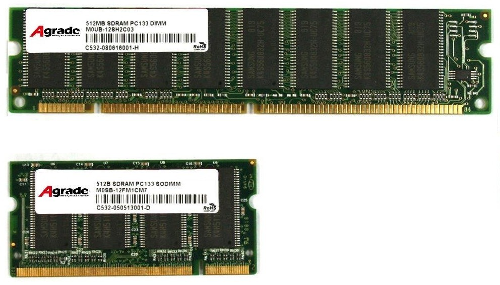

Tipos de memoria RAM

Vamos a explicarte qué tipos de memoria RAM existen, hablándote de sus tipos según el tamaño y de sus estándares como los DDR3 y DDR4, además del futuro DDR5 que pronto llegará al mercado. La idea es que cuando escuches hablar sobre memoria RAM sepas exactamente qué es y cuál es la que puedes usar.
Para ello vamos a empezar definiendo lo más básico, y explicándote qué es y para qué sirve la memoria RAM. Luego, después de hablarte de sus tipos terminaremos diciéndote cómo elegir la que mejor se adapta a la que necesitas.
Qué es la memoria RAM y para qué sirve
La memoria RAM es la memoria principal de un dispositivo, esa donde se almacenan de forma temporal los datos de los programas que estás utilizando en este momento, Random Access Memory en inglés, y tiene dos características que la diferencian. Por una parte una enorme velocidad, y por otra los datos sólo se almacenan de forma temporal. Esto quiere decir que cuando reinicies o apagues tu ordenador, lo normal es que los datos que tuviera almacenados se pierdan.
Tu ordenador o móvil no ejecuta todas las acciones utilizando únicamente el disco duro, ya que si lo hiciera tardaría demasiado en ejecutarlas. Por eso, se utiliza un tipo de memoria mucho más rápida para hacer estas tareas más inmediatas, y es la encargada de almacenar las instrucciones de la CPU o los datos que las aplicaciones necesitan constantemente. Estas instrucciones quedan allí hasta que se apague el ordenador o hasta que se sustituyan por otros nuevos.
Por eso, la cantidad de RAM que tengas afecta directamente al rendimiento de tu dispositivo. Cuanta más tengas más aplicaciones podrás gestionar a la vez, y de ahí su importancia porque si no hay suficiente el ordenador puede ir lento.
A lo que te sueles referir como memoria RAM cuando estás hablando de ella como un componente físico es a unas tarjetas que van conectadas directamente a la placa base de tu ordenador. Estas tarjetas tienen diferentes módulos de memoria integrada que están conectados entre sí, y en dispositivos como ordenadores hay ranuras para tener varias de estas tarjetas.
Memoria DIMM y memoria SODIMM

Las memorias RAM pueden ser de dos tipos dependiendo de su tamaño, y estos tipos son la memoria RAM DIMM y la SODIMM. Los primeros son los Módulos de memoria en línea dual, y son los que puedes encontrar sobre todo en ordenadores de sobremesa, y los segundos son unos Módulos de memoria en línea doble que encontrarás sobre todo en los ordenadores portátiles.